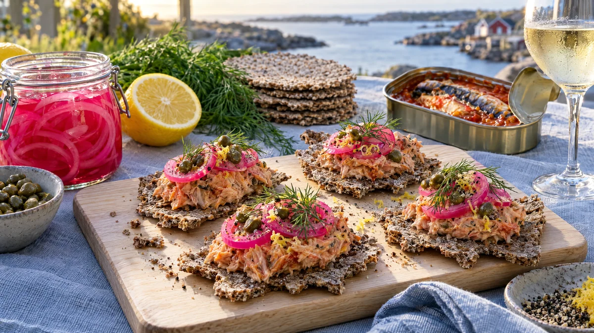

RESTFEST · RECEPTFörrätt · Mingelmat & tilltugg
Makrillrillettes på knäcke med rosa picklad lök
Den där burken makrill i tomatsås som alla har men ingen vet vad man ska göra med blir krämiga rillettes med färskost, citron och dill. De serveras på knaprigt knäckebröd under neonrosa ringar av snabbpicklad rödlök. En förrätt eller mingelbit som ser beställd ut, för en bråkdel av priset.
- Förberedelse
- 20 min + 20 min dragtid
- Tillagning
- 5 min
- Portioner
- 4 som förrätt (ca 16 bitar)
- Nivå
- Nybörjare
 Det här behöver du
Det här behöver du
Tryck på + vid det du behöver köpa.
Snabbpicklad rödlök
Rillettes
Till servering
Gör så här
- Skala rödlöken och skiva den i tunna ringar, 1–2 mm. Lägg ringarna i en ren glasburk eller skål.
- Koka upp vatten, ättika, socker och salt i en liten kastrull och rör tills sockret har löst sig. Häll den heta lagen över löken.
- Låt löken dra i minst 20 minuter, gärna en timme. Den blir klart rosa. Överbliven lök håller en vecka i kylen.
- Lyft över makrillen till en skål med ungefär hälften av tomatsåsen. Resten gör krämen för lös. Mosa grovt med en gaffel.
- Rör ner färskost, citronskal, citronsaft, senap, dill och kapris. Peppra. Smaka av, men salta sällan, eftersom makrillen redan är salt. Låt det finnas lite struktur kvar.
- Ställ rillettesen i kylen i minst 15 minuter så att den stelnar något.
- Precis före servering: forma små quenelles (avlånga klickar) med två teskedar, doppade i varmt vatten, och lägg en på varje knäckebit.
- Toppa varje bit med 2–3 avrunna lökringar, en dillkvist och lite citronskal.
Dekoration och servering
- Lägg bitarna på en ljus träbricka eller ett blekblått fat, så att det rosa poppar.
- Bryt knäcket för hand i stället för att skära det, ojämna kanter ser mer hantverksmässiga ut.
- Servera direkt, knäcket mjuknar efter ungefär en halvtimme.
- Ställ fram burken med rosa lök bredvid som en färgklick på bordet.
- Passar till ett glas torrt vitt vin, cider eller en kall öl.
Mått och ugnstemperaturer
Måtten är svenska (dl, msk, tsk, krm). Ugnstemperaturerna gäller vanlig ugn med över- och undervärme; med varmluft, sänk med 20 grader.